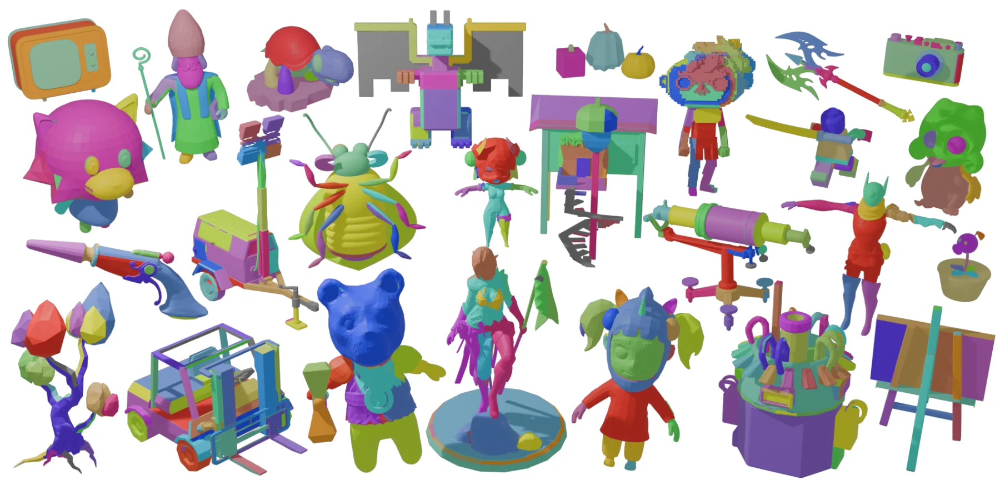
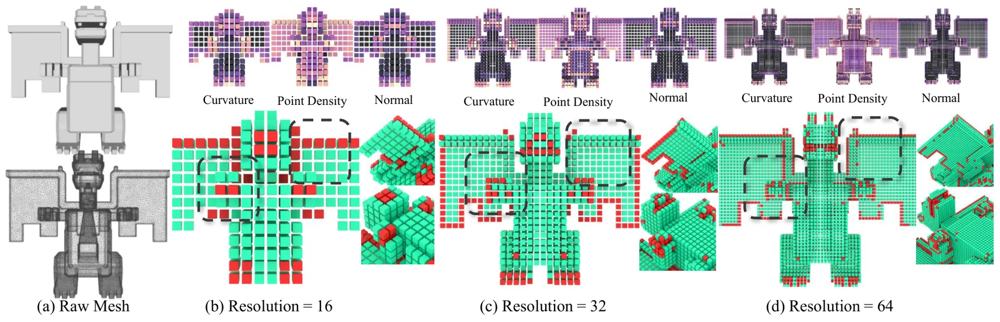
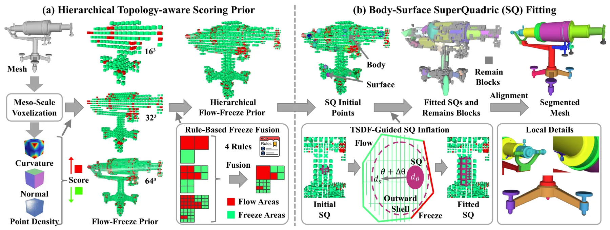
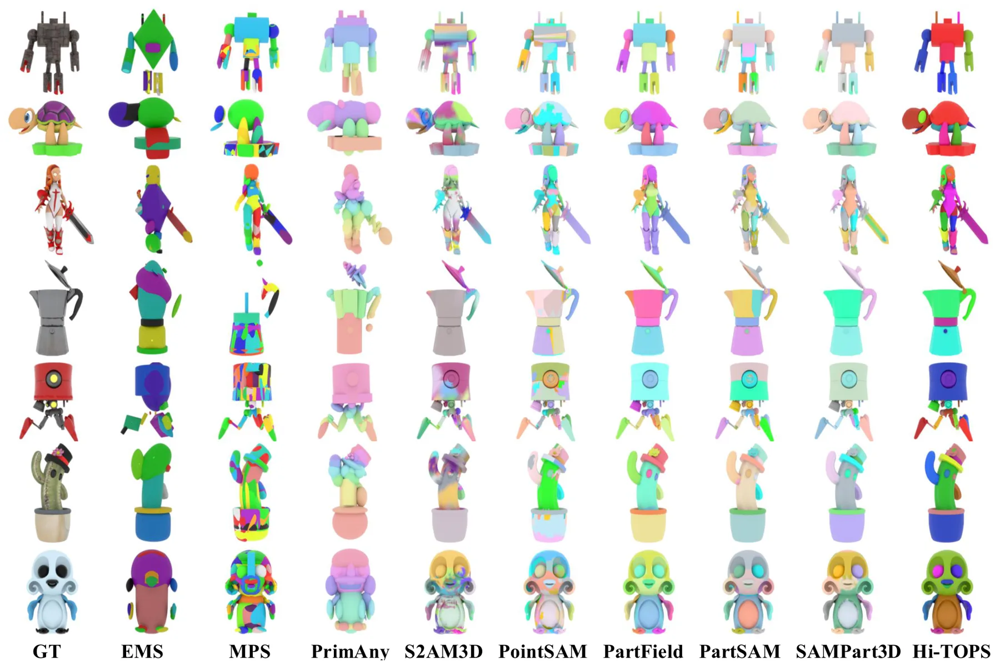
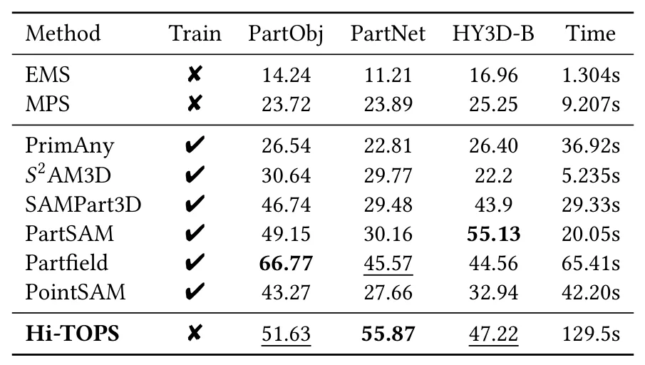
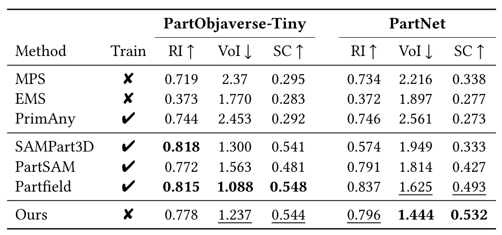
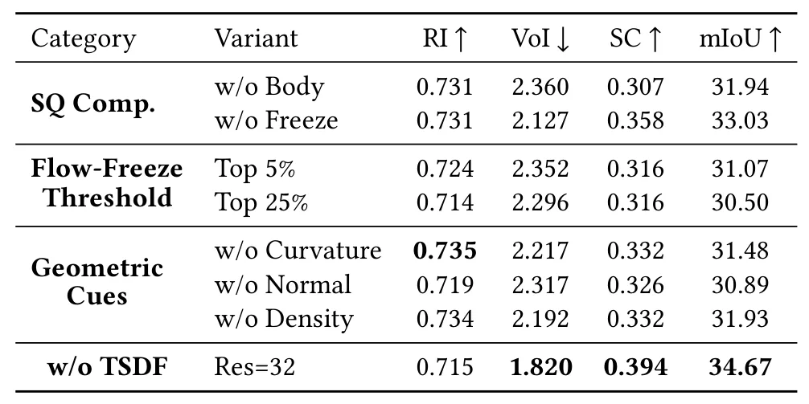
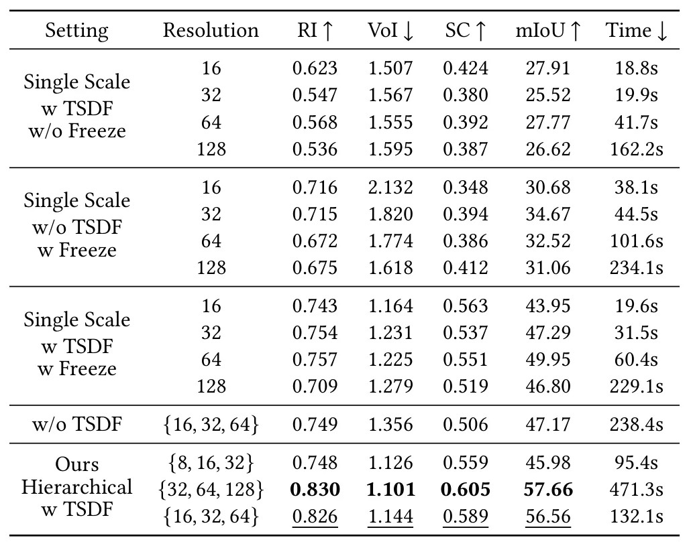

Hi-TOPS：用于三维部件分解的分层拓扑感知评分先验Hi-TOPS: Hierarchical Topology-aware Scoring Prior for 3D Part Decomposition
属于三维几何与重建后处理，结构表达清晰；不涉及相机位姿、SfM/MVS 或在线 SLAM，因此相关度中等。
一句话工作总结
把中尺度拓扑线索、TSDF 与 superquadric 拟合结合，生成可编辑且边界对齐的三维部件；更偏形状处理，但可服务重建后结构化建模。
摘要
面向三维形状的结构化部件分解，提出分层拓扑感知评分先验 Hi-TOPS，在多分辨率 Flow-Freeze 场中融合内在几何线索：Flow 区域支持基元覆盖扩张，Freeze 区域约束关节和细薄结构附近的生长。随后使用 TSDF 引导的体表 superquadric 拟合主体与残余表面结构，并完成 superquadric 到 mesh 的连通、边界对齐分配；方法不依赖语义监督或二维 foundation prior。
Accurate 3D part decomposition requires separating shapes into structurally meaningful components with precise boundaries while preserving articulation seams and thin attachments. Existing approaches often suffer from a structural-scale mismatch: geometric evidence for separation is most reliable at the meso scale, yet many pipelines operate either too globally to respect joints or too locally to remain robust to noise. We propose Hi-TOPS, a Hierarchical Topology-aware Scoring Prior that aggregates complementary intrinsic cues into a multi-resolution Flow-Freeze field. Flow regions provide expandable support for primitive coverage, while Freeze regions restrict growth near articulations and thin structures. A TSDF-guided body-surface superquadric fitter then captures dominant cores and residual surface structures, followed by SQ-to-mesh assignment for connected, boundary-aligned parts. Across diverse benchmarks, Hi-TOPS delivers stable, editable decompositions without semantic supervision or 2D foundation priors.
中文解读摘录
- 原题：Sensor Deployment Optimization for Passive TDOA Localization Under Unknown Drift Distribution
- 作者：Zhenxing Zhang, Tianxian Zhang, Zerui Zhang, Zicheng Wang, Xueting Li
- 推荐评分：8.2/10
- 核心方法：仅使用漂移误差的一二阶统计量构造广义
GDOP_D，分析传感器位置漂移对几何精度分布的重塑，并用 adaptive unidirectional PSO 求解区域最坏情形部署。 - 为何值得看：与 GNSS 站网、UWB/声学 TDOA 的鲁棒几何设计和误差传播直接相关；应进一步核查推导假设、漂移相关性和实测验证。
图表/页面预览
{kind=link}

{kind=link}

{kind=link}

{kind=link}

{kind=link}

{kind=link}

{kind=link}

{kind=link}
